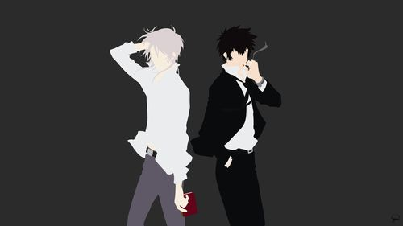

He is a humanist on the dark side: someone hopelessly in love with cruelty, savagery and all the worst aspects of human nature with no qualms about witnessing or causing others' suffering. He has the ability to manipulate people to do his bidding, possessing both uncommon charisma and a true gift for persuasive speech.
“When a man faces fear, his soul is tested. What he was born to seek... what he was born to achieve... his true nature will become clear.”
Makishima's Characteristics.
Makishima feels alienated in the society he lives in and only briefly resonates with a few people.He is shown to be what can be considered friendly with Gu-sung Choe, only because he admires his competence as an individual.Everybody else is just a pawn in his grand scheme.He also shares a profound connection with Shinya Kogami, who he believes to be his symbolical opposite.Click on the links below to know more about them.